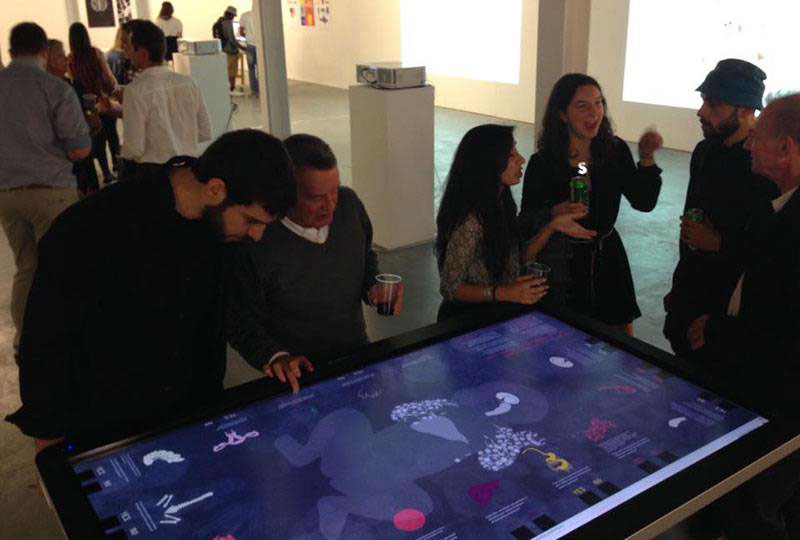

Gene Editing

This interactive installation, built with Processing, is displayed on a large touchscreen table. Viewers walk around it and vote on whether they would select certain traits for their children when the technology becomes available. Each trait is represented by a part of the body so that the number of votes determines the opacity of the associated organ system; more votes will make that organ appear brighter in the central image. It explores the future society which emerges from our collective choices about gene editing technologies. Past votes are displayed in the small multiples on the left side of the image.

← Back to Design & Illustration